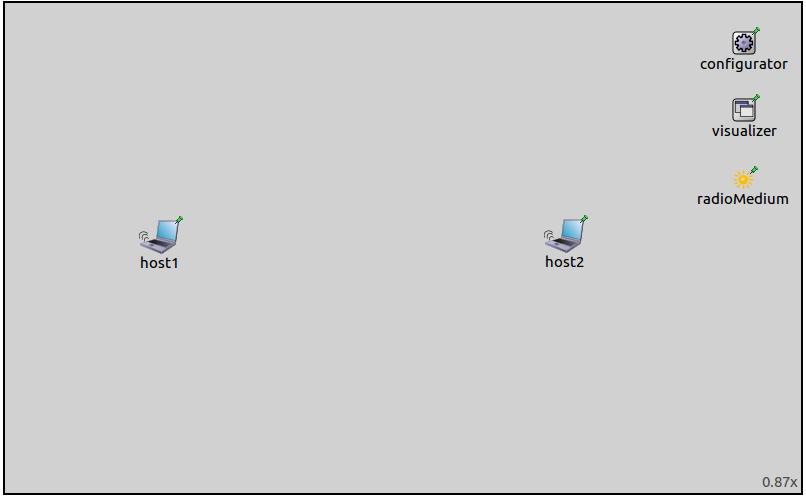

the problem is there are multiple hosts transmitting simulateously in a large network this visualization makes it easier to see which nodes are transmitting and which are receiving at a time what transmissions are present at various nodes at a time misc features are the communication ranges and interference ranges. This helps in the placement of nodes, and to fine tune the transmitter power settings. -> this is not about propagation, its about the mediumvisualizer, so its misc
In a large network, there might be multiple wireless nodes transmitting simulataneously, causing interference at receiving nodes. One has to go through the logs to see which transmissions are received by which nodes. One has to go through the tedious process of scanning the logs to see which transmissions are received by which nodes. The visualization makes it easier to see which nodes are transmitting and which are receiving at any given time, and what transmissions are present at various nodes.
In a large network, there might be multiple wireless nodes transmitting simultaneously, resulting in interference at receiving nodes, and incorrecly received packets. The logs contain the clues as to what happened to various packets, but scanning through the logs is a tedious process. By visualizing radio signals as they propagate through space, it is easier to see which nodes are transmitting and which are receiving at any given time, and what transmissions are present at various nodes.
This example contains 3 configurations of increasing complexity, each showing different features of the visualization.
config 1 - default settings, all visualizations enabled (except for the communicationheat), simple network config 2 - more complex network, setting the animation speed parameters, and that the animations are not the same duration config 3 - interference, an important feature, is that it shows that there are multiple transmissions present at a node at the same time...overlapping transmissions
The MediumVisualizer module can visualize various aspects of radio transmissions. It can visualize radio signals as they propagate through space as colored disks with a wave pattern, originating at the signal source node. The disk representing the signal fades with distance, e.g. as the signal gets weaker further out from the transmitter. By default, different transmissions are colored differently. The signalColor parameter specifies a set of colors for the signals. The set of colors is either 'light' or 'dark', the latter is the default. Also, a custom set of colors can be specified, e.g. "blue, red, yellow". The name of the transmitted packet is indicated on the disk. The visualization of propagating signals can be enabled with the displaySignals parameter. TODO filters
The visualizer can indicate that nodes are currently receiving or transmitting a signal, by placing a transmission/reception icon over the node, on the top level canvas. The power of the transmitted/received signal is indicated in dBW. The visualization of transmissions and receptions are enabled with the visualizer's displayTransmissions and displayReceptions parameter, respectively.
The communication and interference ranges of nodes can be visualized as blue and grey circles, respectively. These are enabled with the displayCommunicationRanges and displayInterferenceRanges parameters.
The MediumVisualizer module can visualize various aspects of radio communications. It has three main features:
The visualizer can visualize radio signals as they propagate through space as colored disks. The disks start to grow at the beginning of the transmission, and recede after the transmission is over. They originate from the transmitting node, and feature a moving wave pattern. The disk representing the signal fades with distance, e.g. as the signal gets weaker further out from the transmitter. By default, different transmissions are colored differently. The signalColor parameter specifies a set of colors for the signals. The set of colors is either 'light' or 'dark', the latter is the default. Also, a custom set of colors can be specified, e.g. "blue, red, yellow". The name of the transmitted packet is indicated on the disk. The visualization of propagating signals can be enabled with the displaySignals parameter.
The visualizer can indicate that nodes are currently receiving or transmitting a signal, by placing a transmission/reception icon over the node, on the top level canvas. The power of the transmitted/received signal is indicated in dBW. The visualization of transmissions and receptions are enabled with the visualizer's displayTransmissions and displayReceptions parameter, respectively.
The communication and interference ranges of nodes can be visualized as blue and grey circles, respectively. These are enabled with the displayCommunicationRanges and displayInterferenceRanges parameters.
By default, all packets, interfaces and nodes are considered for the visualization. This selection can be narrowed with the visualizer's packetFilter, interfaceFilter, and nodeFilter parameters.
This configuration demonstrates the visualization, with the visualizer's default settings. It uses the following network:
It contains two WirelessHosts. Additionally, there is an IPv4NetworkConfigurator, an Ieee80211ScalarRadioMedium, and an IntegratedVisualizer module. The host1 is configured to send UDP packets to host2. Displaying of transmissions and receptions, propagating signals, communication and interference ranges are enabled with these visualizer settings:
*.visualizer.*.mediumVisualizer.displaySignals = true *.visualizer.*.mediumVisualizer.displayReceptions = true *.visualizer.*.mediumVisualizer.displayTransmissions = true *.visualizer.*.mediumVisualizer.displayCommunicationRanges = true *.visualizer.*.mediumVisualizer.displayInterferenceRanges = true
When the simulation is run the networks looks like this:

Small pieces of the communication range circles are visible in the right corners of the image. When zoomed out, the communication range circles are completely visible:
TODO: or...One has to zoom out for them to be completely visible

The interference ranges are way larger than the communication ranges. When even more zoomed out, the interference range cicles are visible as well:

TODO: this should be done simpler...the transmitter power should be adjusted
This animation illustrates the visualization of propagating signals:
The host1 sends an ARP request packet to host2, which sends an ARP reply. The host1 ACKs it, then sends the first UDP packet. This is followed by host2's ACK. The blue transmission indicator icons are displayed above nodes when they are transmitting. Similarly, the red reception indicators are displayed above them when they are receiving. The transmission power and power of the received signal is indicated on the transmission/reception icons in dBW.
The propagating signalThe visualization of the propagating signal has two phases. The Propagation phase is at the beginning and the end of the transmission, visualized with a growing and receeding disk. The Transmission phase is when the transmission is present on the entire playground. The animation slows down at the beginning and at the end, when the edges of the signal are propagating. Since this happens very fast, with the speed of light, the animation has to be slow in order for it to be visible. When the signal is present on the playground (while the disk is still growing fast somewhere far from all the nodes in the network, outside of the playground), keeping this same animation speed would result in the transmission animation being very long. The transmission itself has a duration that is a few magnitudes longer than the time it takes for the beginning of the transmission to reach the nodes fathest away from the source. Thus a different, faster animation speed is required when the transmission is present at all nodes. The animation speed changes smoothly between the two values. By default, the propagation phase animation both at the beginning and at the end of the transmission have a duration of one second. The duration of the transmission phase is also one second, thus visualizing a packet's transmission takes three seconds as per the default animation speed settings. These settings can be configured with the visualizer's parameters, more on this in the next section.
TODO: the signal is not growing past the furthest node, it is just present everywhere
TODO: the animation time is fixed 3 seconds, regardless of the bitrate and the size of the packet... that is, regardless of the time it takes in reality
TODO: Multiple nodes, animation speed settings
This configuration contains three nodes, as opposed to two in the previous one. Additionally, this section describes the propagation animation settings of the visualizer. The configuration uses the following network:

It contains three AdhocHosts. Additionally, it contains an IPv4NetworkConfigurator, an Ieee80211ScalarRadioMedium, and an IntegratedVisualizer module. The source is configured to ping the destination. The communication ranges are configured so that hosts can reach only the adjacent hosts. The center host relays packets between the hosts on the two sides.
TODO: the animation speed settings...
The animation speed during the propagation phase and the transmission phase can be specified by the signalPropagationAnimationSpeed and signalTransmissionAnimationSpeed parameters. TODO: how. Alternatively, a fixed duration can be specified for the two phases with the signalPropagationAnimationTime and signalTransmissionAnimationSpeed parameters. These take effect when no corresponding animation speed is defined. Additionally, additional time can be specified TODO. AnimationSpeedTimeChange TODO
That is, there are 2 settings, transmission animation speed, and propagation animation speed. How is that defined? How do you get the 500/c value? The transmission animation speed should be about 2 degrees of magnitude larger than the propagation animation speed so that the propagation is visible, and the transmission is not too long If some of them is not defined, then the AnimationTime parameter takes effect which is by definition 1 second An additional animation time can also be defined One more parameter -> later
It depicts as a ping packet from source makes its way to destination, and as the ping reply packet gets back to source.
What i want to say here is... first the animation speed slows down and speeds up at the beginning and at the end, it is slower, so the growing of the signal is visible then it speeds up when the transmission is present in the playground the animation speed alternates between these two values, and the gradient is smooth the default behavior is that both these speeds are set up so that the beginning of the signal in the growing phase, the signal transmission phase, and the end of the signal, all three take one second each that makes the whole transmission three seconds this is because there is no default set, so some default value has to be found if one sets the animation speeds... lets say you want the growing signal to travel 500 meters in a second you set the propagation animation speed to 500/speed of light and you set the transmission animation speed to 100 times that and now, the transmission duration depends on the bitrate and the size of the packet. its not constantly 3 seconds long regardless of the size of the packet and the bitrate. If the goal is just some illustration, then the default settings are good if the goal is to be realistic, the animation speeds need to be set idea: the default animation speed should be set according to the size of the playground
Whats on the video...the packet sends the animation slows down and speeds up, but its not constant duration. the ACKs for example, are longer than the pings, despite being smaller packets. they are just transmitted with a slower bitrate -> controlbitrate the spreading of the signal goes farther than the last node the signal reaches...this amount can be set by a parameter and describing the animation speed settings part...how they look like in the video it takes 1 second to for the signal to travel 500 meters, when the slide is set to the middle position...it is not in this video the power indicator shows that the signal is stronger at receiving nodes that are closer. and actually, energy detection and sensitivity is both -85 dBm by default that should be about -115 dBW -> the reception power at the farther node is a bit smaller than that
TODO: the 3rd config
This configuration demonstrates the visualization of interfering signals. It uses this network:

It contains three AdhocHosts laid out in a chain, just like in the previous configuration. The hosts on the two sides, source1 and source2, are configured to ping the host in the middle, destination. There is a wall positioned between the two hosts on the sides. The obstacle loss model is IdealObstacleLoss, thus the wall blocks transmissions completely. Both source hosts can reach the destination, but cannot reach each other, and cannot detect whatsoever when the other source is transmitting. The network also contains an IPv4NetworkConfigurator, an Ieee80211ScalarRadioMedium, a PhysicalEnvironment, and an IntegratedVisualizer module.
The third config shows the interference when there are two signals present at a node at the same time it causes interference there are interfering signals but it doesnt necessarily cause collisions that is, the node cannot receive the transmission correctly, because of the other transmission it garbles up the transmission there is a transmission close, and it is for the node and there is one far, it is not for it it might be weak the node's position, but it might be enough to garble up the main transmission
TODO: the comm range and interference range indicators can be used to position nodes
TODO: further info